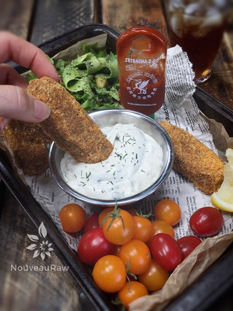
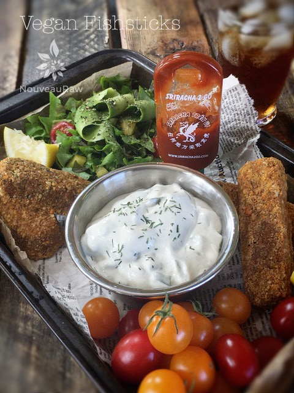

Fish Sticks

~ raw, vegan, gluten-free ~
Fish Sticks…. Raw Fish Sticks…. Raw Vegan Fish Sticks…. Does it sound as funny to you as it does to me to type those words?
Lets be honest, raw fish sticks don’t sound very appetizing. Vegan Fish Sticks, well that is just an oxymoron if I ever heard one. If I say or type it enough, I am hoping it will make sense one day. hehe
Some of you may never have heard of fish sticks. I for one grew up eating them, a lot of them! Oddly enough, I never cared for fish growing up, but I loved fish sticks. The reason being… the breading and tartar sauce could make a bicycle tire taste good. So how does one make a raw dish taste like fish? Kelp my friend, kelp.
Your body, as amazing as it is, doesn’t produce iodine, nor can it store large quantities of it. It must be introduced through the foods we eat. A lack of iodine can lead to a goiter, hypothyroidism or hyperthyroidism. Iodine is a water-soluble trace element that’s rare in the earth’s crust, but fairly prevalent in its seas.
Unfortunately, due to over-planting and chemical fertilizers, the soil in most of US has virtually no iodine content. This is where kelp comes into play. Kelp is a tall, leafy plant that grows in cool water, floating vertically over the rocky ocean floor. Although tethered there by a root-like stem called a holdfast, it does not draw nutrients from the ground but rather from the water around it. This ensures that every leaf is packed with an ocean of goodness and iodine.
When I made this recipe, I used a 2 Tbsp cookie scoop. This made 19 fish sticks. You could also form them into patties if you wanted to make fish sandwiches. I am guessing that it would have made an even 20 fish sticks, but due to the taste testing, I lost one. :)
I want to quickly point out two things here. The first thing is that if you don’t want the almond skin flecks in your batter, you should remove the skins after soaking the almonds. Also, the recipe calls for 1 Tbsp + 1 tsp of kelp powder. Start with 1/2 Tbsp and build up. I have found that different brands can be stronger than others. This will allow you to tailor it to your liking and enjoyment. Other than that, knock yourself out and have fun!
These are great with my raw tartar sauce! You will have some leftover “breading,” use it for sprinkling on a salad, or you can make some avocado “fries” with it! (Bob loved these!)
yields 20 fish sticks
- 1 cup raw almonds, soaked
- 1 cup raw sunflower seeds, soaked
- 1/2 cup celery, minced
- 1/2 cup red onion, minced
- 1/4 cup fresh lime juice
- 1 Tbsp + 1 tsp kelp powder
- 1 tsp coconut Aminos
- 1 tsp Himalayan pink salt
- 1 tsp dried dill weed or 1 Tbsp fresh dill weed
- 1/2 cup water
“Breading”: yields 1 1/4 cups
Preparation:
- After soaking the almonds and sunflower seeds, drain and rinse them. Place them in the food processor, fitted with the “S” blade. Process until they break down to a crunchy paste (but not nut-butter texture).
- Add the celery, onion, lime juice, kelp powder, aminos, salt, and dill. Process until blended. Stop and scrape the sides down occasionally.
- While the food processor is running, drizzle in the water – adding only enough to make the paste nice and moist. Transfer to a bowl.
- To make the breading, grind the cashews in the food processor to a small crumb size. Don’t over-process, as this will start to release the oils and we don’t want that.
- Add the ground flax seeds, paprika, salt, pepper, and yeast. Pulse together and pour into a rectangular container for dredging.
- Measure out 2 Tbsp of “fish batter” (boy does that sound weird to say) and shape it into a fish stick. Then coat with the breading and place on the mesh sheet that comes with your dehydrator. Continue until all the batter is used.
- Dehydrate at 145 degrees for 1 hour then reduce heat to 115 degrees and continue drying for 4 -6 hours. Don’t dry these too much that they get hard… fish sticks are moist.
- Store leftovers in the fridge for up to 5 days. You can reheat them by placing them back in the dehydrator for a while.
Culinary Explanations:
- Why do I start the dehydrator at 145 degrees (F)? Click (here) to learn the reason behind this.
- When working with fresh ingredients, it is important to taste test as you build a recipe. Learn why (here).
- Don’t own a dehydrator? Learn how to use your oven (here). I do however truly believe that it is a worthwhile investment. Click (here) to learn what I use.

Shape the fish sticks and give them a dunk in the crumbs. Place on the dehydrator tray and dry.


© AmieSue.com